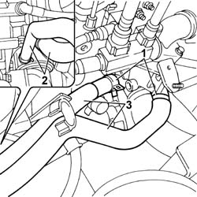

1088D47 OIL EXCHANGE SLEEVE - R R
- Path
- Procedures > 10 ENGINE UNIT > 1088 ENGINE COOLING > 1088D COOLANT HOSES AND SLEEVES > 1088D47 OIL EXCHANGE SLEEVE - R R
- Kind
- repair procedure (removal / refitting; the operation number is the code)
- Applies to
- engines: 2.0 JTD 8V; all production periods
- Interactive page
- https://sloeber94.github.io/elrnDB-fDct/en/#/244000964
Applies to: engines: 2.0 JTD 8V; all production periods
 Removing
Removing
 Refitting
RefittingOp. 7055B54 UNDER-ENGINE GUARD - R R
- Position a suitable container for collecting the engine coolant.
- Disconnect the lower radiator pipe and drain the engine cooling system.
1. Using suitable pliers, open the retaining bands on the thermostat.
 | Description | Code | Function |
|---|---|---|---|
. | Caliper | 1.831.138.000 | Band opening |
2. Using suitable pliers, open the retaining bands on the engine oil heat exchanger.
| Description | Code | Function |
|---|---|---|---|
. | Caliper | 1.831.138.000 | Band opening |
3. Remove the supply and return hoses.

Applies to: engines: 2.0 JTD 8V; all production periods
Refitting
Removing- Fit the supply and return hoses to the heat exchanger.
- Connect the hoses to the heat exchanger and to the thermostat.